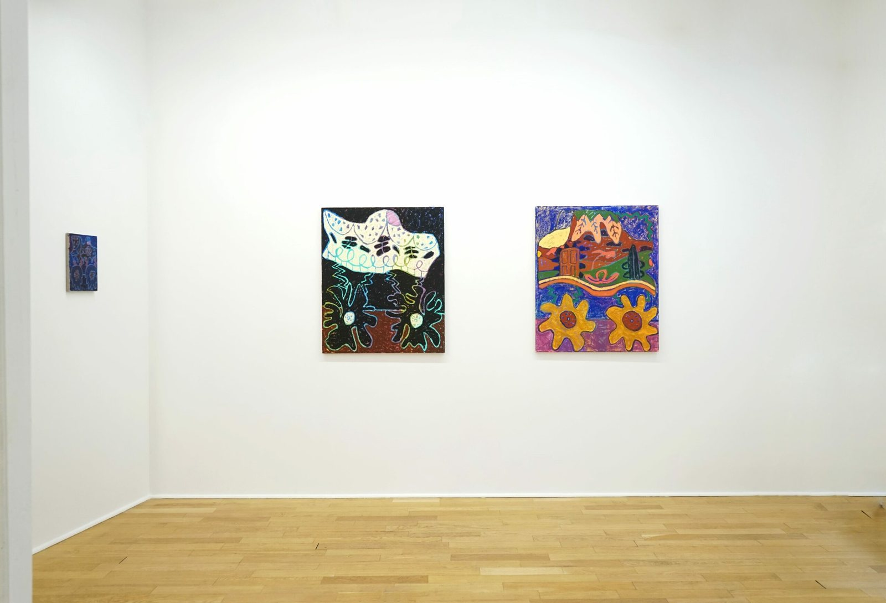
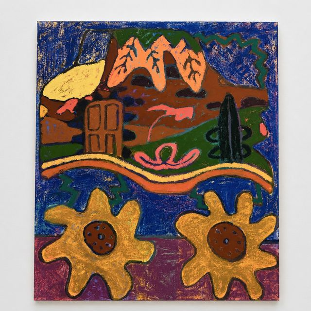
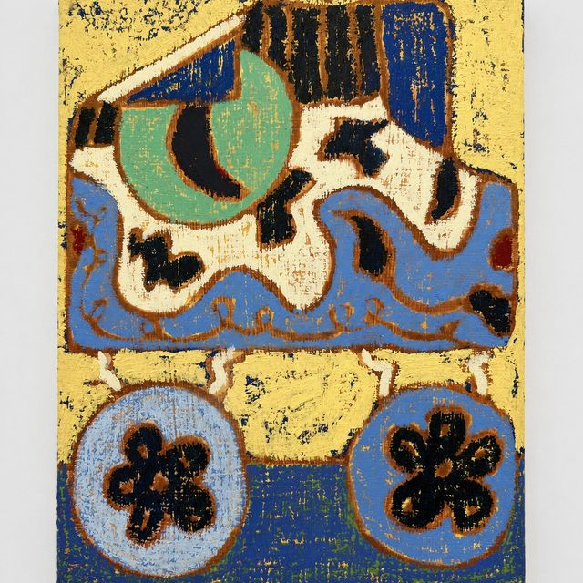
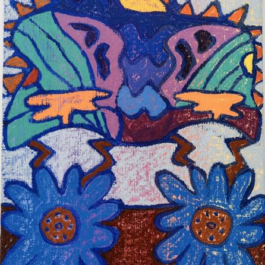
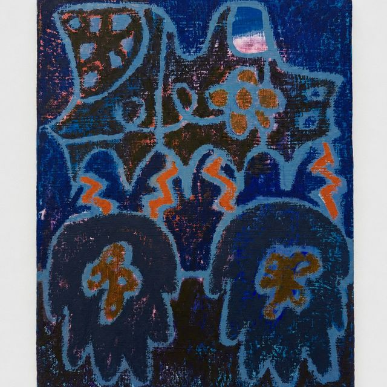
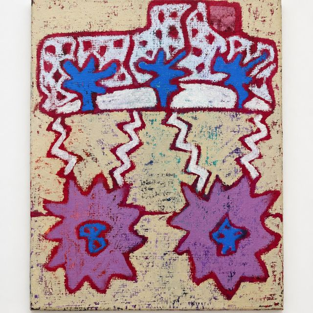
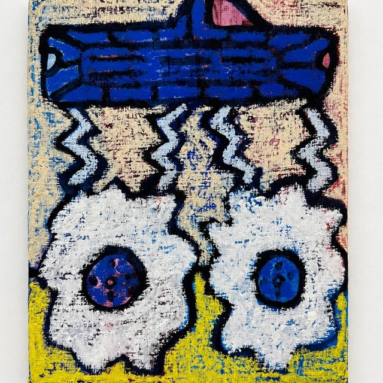
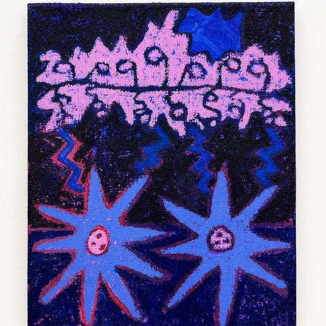
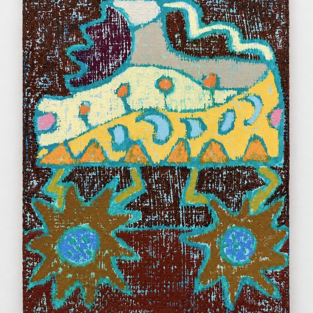
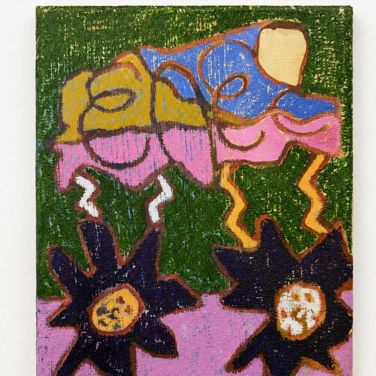

Monster Garden
Solo exhibition
Galerie PJ, Metz, France
12 September – 17 October 2026





Nicholas Norris is known for his large scale operatic paintings which blend interior and exterior space. In this exhibition, Monster Garden, Norris moves in a new direction, presenting his newest body of work, far more intimate and distilled, focused on a single subject: the monster truck. With one straightforward composition, Norris plays with repetition, color, and elasticity of form, giving us a multitude of moods and sensibilities.
Each painting has the same structure. Two wheels are positioned at the bottom of the composition with the truck body raised above. Connecting both wheels and body are lines denoting the vehicle’s suspension. Behind these parts, we see a solid sky and ground separated by a simple horizon line which passes behind the wheels, positioning the viewer’s eye level with the wheel’s axis. Like the truck, we are planted firmly on the ground. The constituent parts fill the visual field like a rubber stamp leaving gaps here and there where we glimpse the background. The shapes are flat, turned parallel with the picture plane, especially the wheels which address the viewer directly. If these trucks could move, they would roll, bounce, or slide side to side, emphasizing the composition’s lateral movement. However, these trucks are not exiting the stage just yet. They are fully present, front and center.
The image of the monster truck came to Norris unexpectedly while drawing in his studio. For Norris, drawing is a way to connect with the essence of things without overanalyzing. When the monster truck emerged from his hand onto the paper, it felt good to draw, so he continued drawing it. Later he enlarged the drawings onto canvas, turning them into paintings. In retrospect, the monster truck makes sense as a subject given that Norris is a father of two boys who play with many different toys, including monster trucks. Perhaps the image reappeared to the artist as a way to reflect upon the space he shares with his boys, a place where boyhood and fatherhood touch, a visual opportunity to explore the playfulness common to both stages of life.
The monster truck was created in the United States when people started installing modern engines and military-grade tires into the rusted shells of old trucks decaying in their backyards. Like Dr. Frankenstein, these makers were creating life out of ruin. The hobby eventually became a form of entertainment. Monster trucks performed stunts for bewildered crowds, launching into the sky, flying over obstacles, and crushing vacant cars beneath their enormous weight. It was pure theatre and spectacular fun. Later, monster trucks became toys, of course, allowing kids to play out the same dramas and harmless destruction at home. The cultural relevance of the monster truck is not particularly important to the making of these paintings. Norris is an intuitive painter, driven by form and the process. But the monster truck shares something with the creative act, a force that is both powerful, raucous, maybe even mischievous, but in Norris’ paintings, also has a tender, approachable quality.
Norris starts his paintings with a thin wash of acrylic paint. The color is bright and the application is open and gestural. A yellow base might be countered with a complementary violet. A dark blue base might be overlaid with analogous turquoise or indigo. These decisions are made intuitively without a known destination in sight. This initial color acts as a background vibration, a sheer layer peering through subsequent layers of impasto paint. The initial layer also serves as a loose map upon which the rest of the painting will unfold.
The majority of the painting is made with oil stick, which is a cylindrical piece of wet oil paint wrapped in paper. The material is held in the hand like a crayon, giving it a graphic application, but it’s also wet and malleable, giving it a painterly quality, full of irregular edges and open passages. The pigment in an oil stick is very potent. Norris uses a range of colors, mostly purchased from manufacturers, with some also made by the artist himself. Instead of mixing colors on a palette, oil stick allows the artist to apply color directly to the canvas, bypassing needless rumination. The paintings have a rough, grainy surface, an effect that looks similar to taking rubbings from an old textured stone. There is no splashy bravado here, nor is there fussy detail. Instead Norris uses his oil stick to rub, press, and slide the opaque material onto the canvas, slowly building up the layers into a surface that is both solid and airy.
Repetition of form is a major aspect of this body of work and served as a source of stability for the artist during uncertain times. The repeated curves and ellipses in the paintings create a melodic rhythm and slowly build a familiarity with the viewer. There is a meditative quality. However, Norris thinks of repetition more like an athlete who repeats the same movement, changing the position of a hand or finger ever so slightly, exploring how each tiny difference might change the outcome or effect. Norris makes similar adjustments in each painting through scale, line, texture, and color relationships, resulting in each painting conjuring a different state of mind or mood.
Although we are calling the subjects in these paintings monster trucks, they share a thin resemblance to the actual thing. The paintings are essentially abstract and the truck serves as an abstract scaffold to play with form. The so-called monster truck is eager to change form. What looks like wheels could easily be flowers, eyes, or stars. The body can be a landscape, carcass, instrument, or diagram. This free-associative quality, where forms remain elastic and open, invites viewers to see what they want to see.
What I find most impressive about these paintings is their sense of forward momentum. These trucks are on their way somewhere, open to change, variation, and movement. Paradoxically, Norris was able to achieve this variation precisely by choosing a singular subject. Their upbeat vibrancy is infectious. The paintings in Monster Garden remind us to enjoy and appreciate both the raucous and the tender aspects of the creative act and, above all, keep moving.
Text by David V. Whelan
Works















